0. 課程資訊與教材
| 課程名稱 | 「一起來讓簡報、資訊圖表改起來及動起來」（NotebookLM x Canva Magic layers x Gamma x Powerpoint） |
|---|---|
| 頻道 | 生成式 AI 應用電台・晨學講堂 |
| 直播日期 | 2026/04/09；錄影全長 37:31 |
| EP 編號說明 | 本集在 Google Drive 原始資料夾標示為 「EP32+1」；因網站集數序號（EP32 Claude Code 篇、EP34 起已陸續上架）出現缺口，站方將本集對應為 EP33（32+1=33，補上序號缺口）。內容與素材皆為同一場直播，僅站上編號重新對應。 |
| 教材 | 官方課程簡報 10 頁（圖片型簡報，內文極少，主要靠螢幕截圖），實際操作皆在錄影中示範 |
| 一句話先懂 | 四個工具串成一條「讓簡報動起來」的生產線：NotebookLM 生資訊圖表 → Canva Magic Layers 拆圖層改內容 → Gamma 一句話生成動態簡報 → ChatGPT 把圖片轉 GIF、或直接寫 VBA 巨集讓 PowerPoint 自動套動畫。 |
| 示範主題 | 全程以「2026 日本賞櫻全攻略」為示範素材：NotebookLM 產出賞櫻資訊圖表 → Canva 编辑 → Gamma 生成「日本櫻花季・一期一會的粉色浪漫」簡報 → ChatGPT 把櫻花圖轉成飄落花瓣 GIF → VBA 巨集讓整份簡報圖文自動淡入、圖片縮放進場。 |
🎬 錄影回放（可直接播放）
💡 本集官方簡報幾乎全是分節「標題頁」（如「Canva Magic layers」「Gamma」），操作細節沒有收錄在投影片裡，只在錄影中現場示範。本頁 15 張截圖：5 張取自簡報原圖（封面圖解、Canva 中英文首頁、帳號設定、Gamma 動畫快速動作），10 張為下載錄影後親眼逐格判讀擷取的真實操作畫面（含完整 VBA 程式碼與 ChatGPT 對話原文）。
1. 一頁看懂全課程
簡報封面圖解已經把整堂課畫成一條生產線：NotebookLM（筆記本＋大腦）→ Magic Layers（魔法棒＋調色盤）→ 影片／簡報（播放器）→ 投影片＋動畫箭頭。老師照這條線走，四段各講一個工具，最後用 VBA 把「自動動畫」收尾。
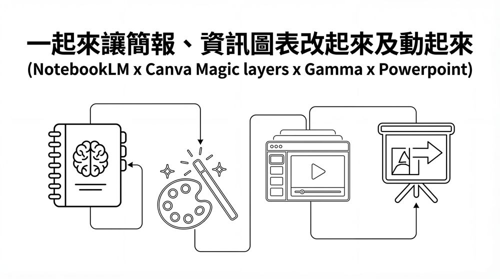
2. Canva Magic Layers：把資訊圖表拆成可編輯圖層
起手式是先用 NotebookLM 針對「2026 日本賞櫻」10 個來源生成一張資訊圖表，再把這張圖丟進 Canva，用 Magic Layers 把圖表拆成一層層可以個別編輯的文字與圖像——重點是 Magic Layers 只有英文版介面才看得到，免費版即可使用。
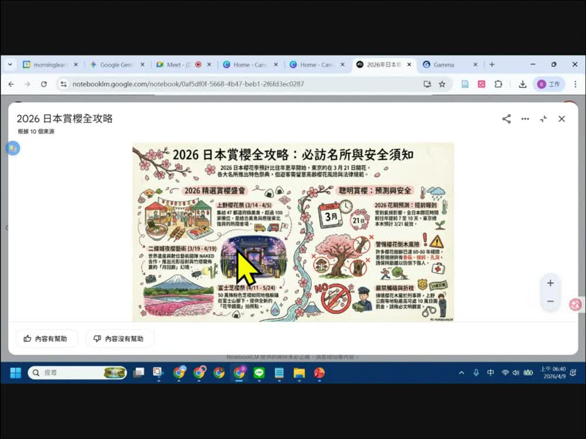
2.1 免費版即可用，但要先切換成英文版
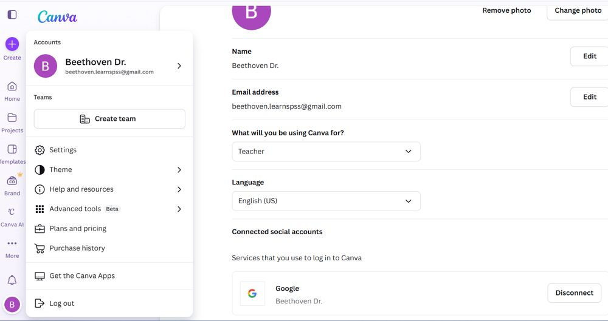
- Step1：點選左下角帳號（頭像圓形按鈕），打開帳號選單（Settings／Theme／Help and resources…）。
- Step2：點選 Settings，將 Language 改成 English (US)——中文版找不到的功能，切成英文介面就會出現。
- 回到首頁，建立圖示列最左邊會多出一個帶 NEW 徽章的 Magic Layers 圖示。
⚠️ 老師特別強調：這不是帳號等級限制，而是語言介面限制——中文介面尚未上架 Magic Layers，免費帳號只要切到英文語系就能用。
2.2 Magic Studio 面板：把圖表拆成可編輯圖層
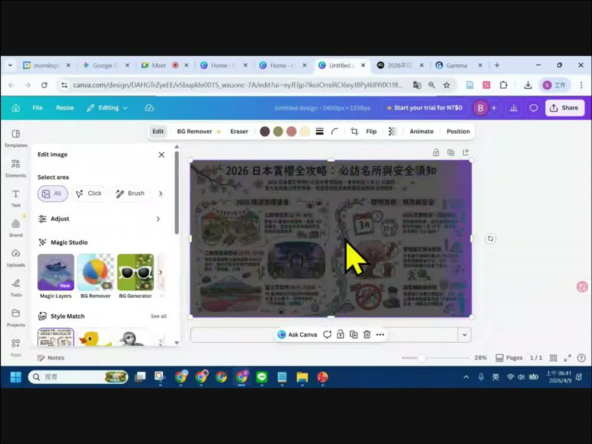
- Magic Layers 會把一張整合式圖片（像 NotebookLM 產出的資訊圖表）自動拆成背景、文字、插圖各自獨立的圖層，拆完就能個別搬動、改字、換色，不用重畫。
- 拆好圖層後，文字與圖像都可直接編輯——這正是簡報開場強調的「字體、圖像可編輯」。
- 編輯視窗上方工具列本身內建 Animate 按鈕：選取任一圖層元素就能單獨套用進場動畫，是比 Gamma 更輕量的「讓單一元素動起來」做法。
「中文介面找不到的功能，先想想是不是語言的問題，不一定是要多課金。」
—— Canva Magic Layers 段落金句
3. Gamma：讓簡報內容動起來
Gamma 走的是另一條路：不改既有的圖，而是直接用一句話生成一整份新簡報，而且生成過程中的圖片本身就內建「動畫」快速動作。官方簡報標題頁寫明：Pro 版即可使用，語言選擇英文。
3.1 一句話生成簡報：介紹日本櫻花季
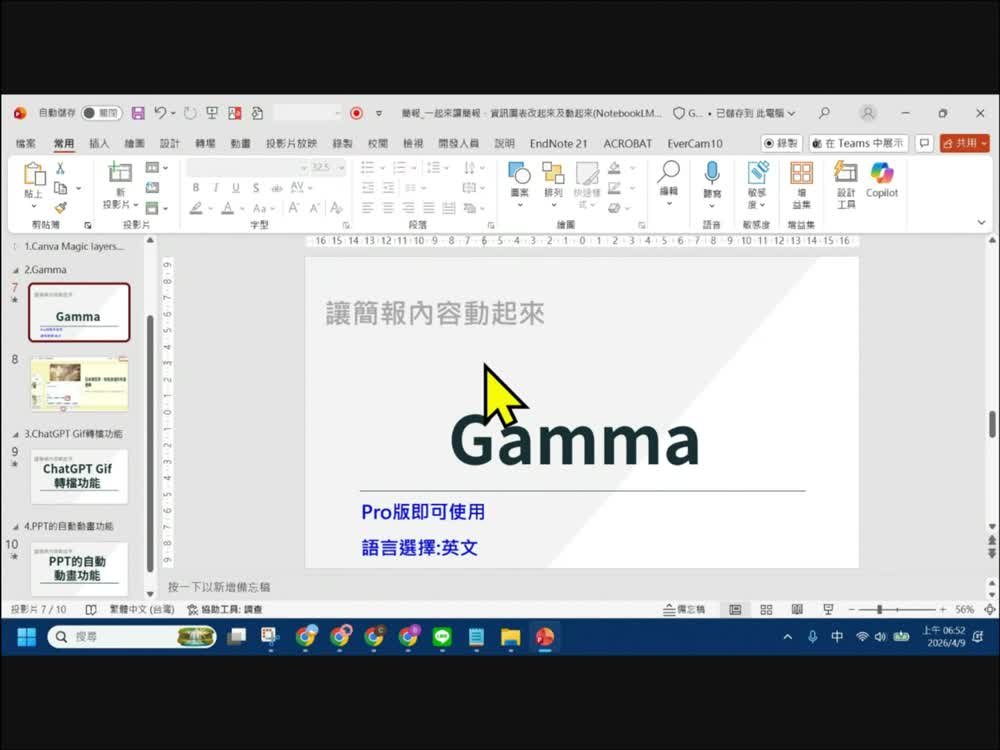
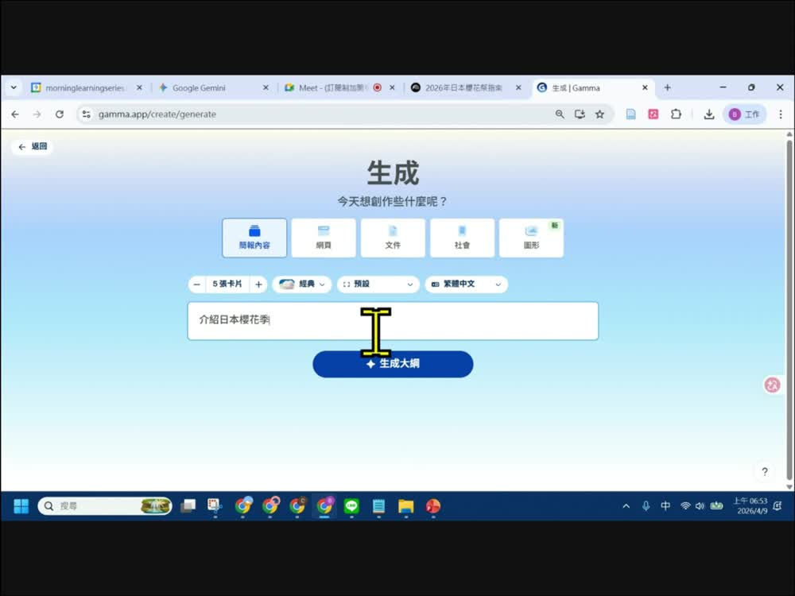
- 開啟 gamma.app/create/generate，選擇要生成的類型：簡報內容／網頁／文件／社會／圖形。
- 設定卡片張數（示範用 5 張卡片）、風格「經典」、語言（示範選繁體中文輸出，介面本身仍需英文語系才能開通某些新功能）。
- 輸入一句主題「介紹日本櫻花季」，按「生成大綱」，Gamma 會自動展開成 5 張卡片的內容大綱。
- 確認大綱後一鍵生成整份簡報，包含標題、內文與 AI 生成的配圖。
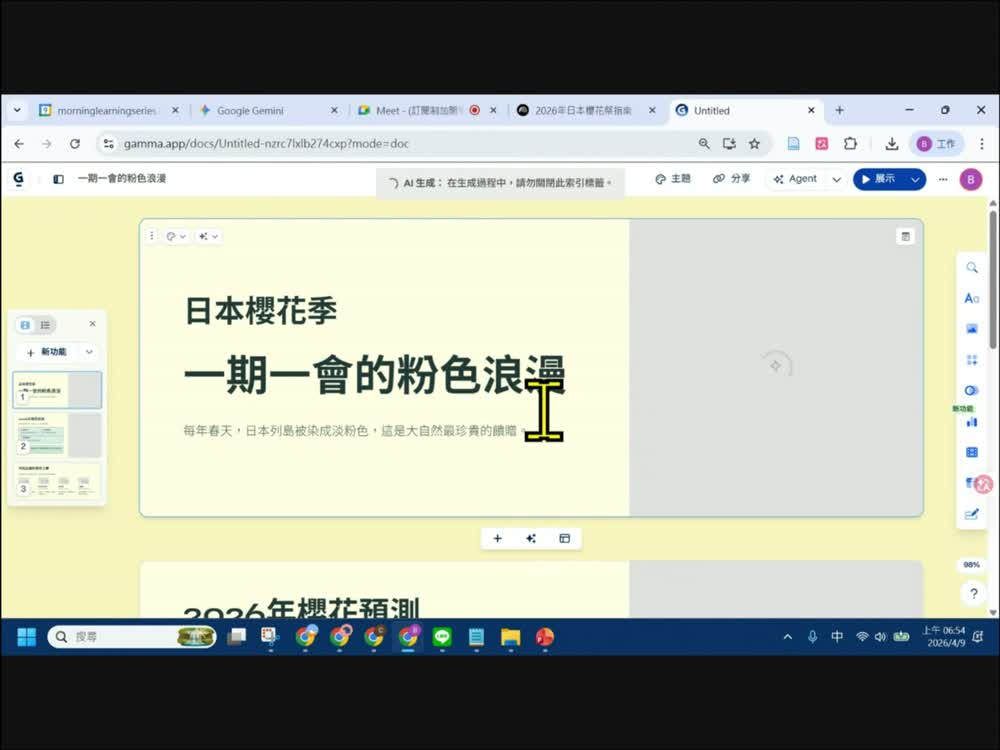
💡 5 張卡片依序展開為：封面「一期一會的粉色浪漫」、2026 年櫻花預測、不同品種的櫻花之美（河津櫻／染井吉野櫻／枝垂櫻／八重櫻）、賞櫻須知等頁——內容脈絡與 NotebookLM 產出的資訊圖表一致，等於把同一批素材換了一種簡報呈現方式。
3.2 圖片內建「動畫」快速動作
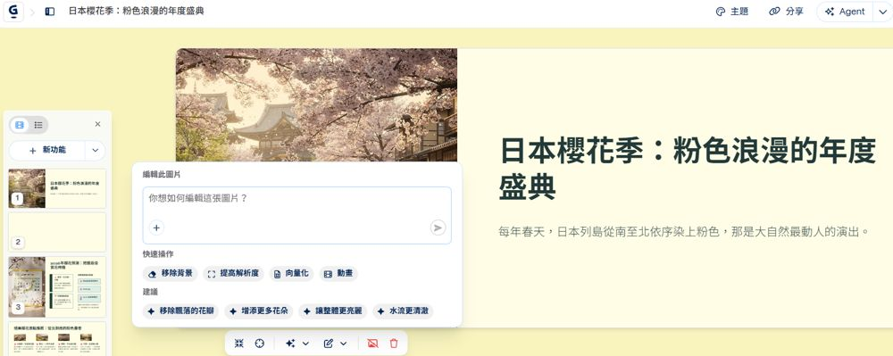
- 動畫按鈕是 Gamma 圖片編輯面板內建的快速動作之一，點下去就能讓靜態配圖產生動態效果，不需要額外工具。
- Gamma 右上角還有 Agent 選單，可用更長的自然語言指令一次調整整份簡報的風格與內容。
- 對照 2.2 的 Canva Animate 按鈕：Canva 是替單一圖層元素加動畫、Gamma 是替生成圖片本身加動畫，兩者概念相通、位置不同。
4. ChatGPT Gif 轉檔功能：把靜態圖變成會飄的花瓣
第三種讓畫面動起來的方法最直接：把一張靜態圖丟給 ChatGPT，直接用白話文說出想要的動態效果，ChatGPT 就會回傳一個可下載的 GIF 檔。
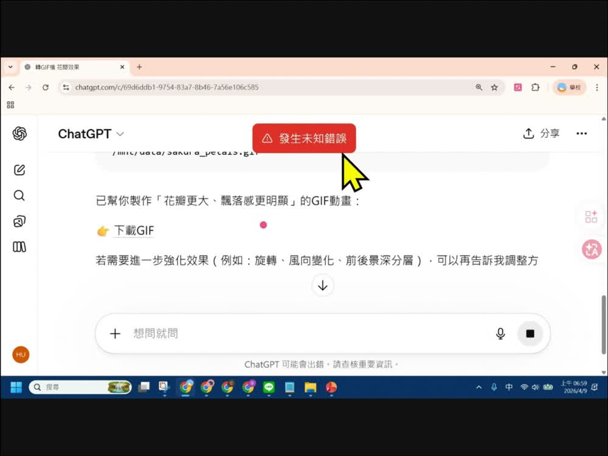
/mnt/data/sakura_petals.gif。轉成GIF檔
花瓣落下感覺明顯
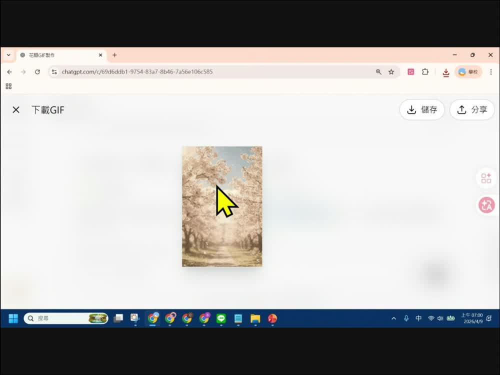
- 整個流程只需要一張圖＋一句話：說清楚「要轉成什麼格式」「想加強哪個動態細節」，不需要任何影片剪輯技巧。
- 錄影中後段的檔案總管也能看到同一批產出檔：
sakura_petals.gif、sakura_advanced.gif——代表老師依同樣方法追加做了「進階版」的第二個 GIF。 - 生成的 GIF 可以直接存檔、分享，或匯入 PowerPoint／Canva 當作動態元素使用。
✅ 對照官方簡報標題頁「ChatGPT Gif轉檔功能 / 讓簡報內容動起來」——這一頁投影片完全沒有截圖，全部操作只在錄影裡現場示範，本節內容依錄影逐格判讀還原。
5. PPT 的自動動畫功能：請 ChatGPT 寫一段 VBA 巨集
最後一段最硬核：與其一張一張投影片手動加動畫，老師直接把 Gamma 匯出的 pptx 丟給 ChatGPT，請它寫 VBA 巨集，一次把整份簡報的標題、內文、圖片都自動套上進場動畫。
5.1 上傳簡報，請 ChatGPT 寫 VBA
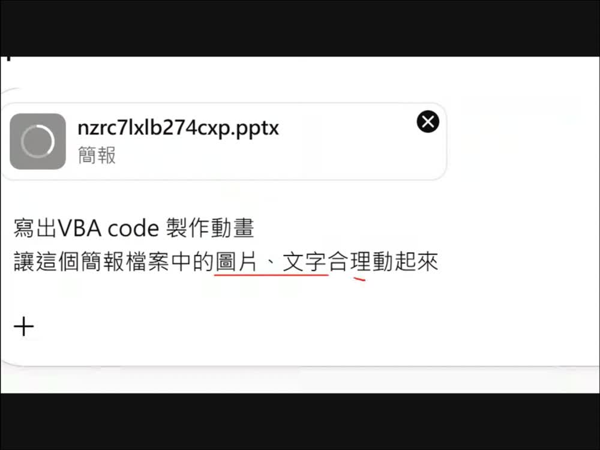
nzrc7lxlb274cxp.pptx，輸入提示詞：「寫出VBA code 製作動畫，讓這個簡報檔案中的圖片、文字合理動起來」。寫出VBA code 製作動畫
讓這個簡報檔案中的圖片、文字合理動起來
💡 上傳檔案時的檔案總管視窗同時可見多個先前產出的成品：
nzrc7lxlb274cxp.pptx（Gamma 匯出簡報）、sakura_petals.gif、sakura_advanced.gif（第 4 節產出的動態 GIF）、2026日本賞櫻全攻略...png（NotebookLM 圖表）——這集所有素材其實都存在同一個下載資料夾裡，串成一條完整的產線。5.2 VBA 編輯器：AutoAnimateSlides 巨集全文
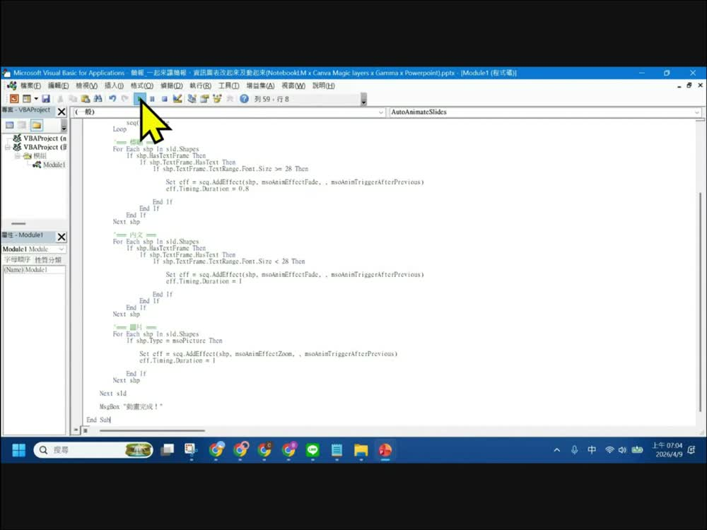
Sub AutoAnimateSlides()
Dim sld As Slide
Dim shp As Shape
Dim eff As Effect
Dim seq As Sequence
Dim i As Integer
For Each sld In ActivePresentation.Slides
Set seq = sld.TimeLine.MainSequence
'先清除舊有動畫
While seq.Count > 0
seq(1).Delete
Wend
'== 標題 ==
For Each shp In sld.Shapes
If shp.HasTextFrame Then
If shp.TextFrame.HasText Then
If shp.TextFrame.TextRange.Font.Size >= 28 Then
Set eff = seq.AddEffect(shp, msoAnimEffectFade, , msoAnimTriggerAfterPrevious)
eff.Timing.Duration = 0.8
End If
End If
End If
Next shp
'== 內文 ==
For Each shp In sld.Shapes
If shp.HasTextFrame Then
If shp.TextFrame.HasText Then
If shp.TextFrame.TextRange.Font.Size < 28 Then
Set eff = seq.AddEffect(shp, msoAnimEffectFade, , msoAnimTriggerAfterPrevious)
eff.Timing.Duration = 1
End If
End If
End If
Next shp
'== 圖片 ==
For Each shp In sld.Shapes
If shp.Type = msoPicture Then
Set eff = seq.AddEffect(shp, msoAnimEffectZoom, , msoAnimTriggerAfterPrevious)
eff.Timing.Duration = 1
End If
Next shp
Next sld
MsgBox "動畫完成！"
End Sub
| 程式邏輯 | 做了什麼 |
|---|---|
| 清除舊動畫 | 逐張投影片先跑 While seq.Count > 0: seq(1).Delete，避免重複疊加動畫。 |
| 標題淡入 | 字級 ≥ 28pt 的文字框視為標題，套用 msoAnimEffectFade（淡入），時長 0.8 秒。 |
| 內文淡入 | 字級 < 28pt 的文字框視為內文，同樣淡入，時長拉長到 1 秒，畫面更沉穩。 |
| 圖片縮放 | shp.Type = msoPicture 的圖片統一套用 msoAnimEffectZoom（縮放進場），時長 1 秒。 |
| 觸發方式 | 全部用 msoAnimTriggerAfterPrevious，代表動畫會依序自動接續播放，播放時不用手動點擊。 |
| 完成提示 | 跑完所有投影片後跳出 MsgBox "動畫完成！" 告知使用者巨集執行結束。 |
⚠️ VBA 巨集需要在「啟用巨集的簡報（.pptm）」或本機受信任的 PowerPoint 環境中執行；直接在雲端版 PowerPoint／Google 簡報開啟通常無法執行 VBA。使用前務必先另存副本，並確認來源可信任再啟用巨集。
「不用一頁一頁點動畫，讓 ChatGPT 直接把規則寫成程式，跑一次全部套用。」
—— PPT 自動動畫段落金句
6. 課後自我檢核（照本集實作）
都對應本集真的示範過的動作。可到互動技能地圖逐項打勾。
| 主題 | 你應該做得到… |
|---|---|
| 🎨 Canva | ① 說出 Magic Layers 為什麼中文版找不到、怎麼切到 English (US) ② 找到首頁帶 NEW 徽章的 Magic Layers 入口 ③ 知道 Magic Studio 面板可以拆圖層、也有內建 Animate 按鈕 |
| 🪄 Gamma | ① 用一句話＋卡片數＋語言設定生成一份簡報大綱 ② 在圖片編輯面板找到「動畫」快速動作 ③ 知道 Gamma 生成需要 Pro 版 |
| 💬 ChatGPT Gif | ① 上傳一張圖並用白話文描述想要的動態效果 ② 看懂 ChatGPT 回傳的下載GIF 連結與檔名 ③ 知道產出的 GIF 可以再匯入其他工具使用 |
| 📊 PPT VBA | ① 請 ChatGPT 針對上傳的 pptx 寫動畫 VBA 巨集 ② 看懂巨集依「字級大小」區分標題／內文、依「形狀類型」處理圖片 ③ 知道要在啟用巨集的環境才能執行，且要注意來源安全 |
7. 資料來源與製作說明
- 原始教材：「一起來讓簡報、資訊圖表改起來及動起來（NotebookLM x Canva Magic layers x Gamma x Powerpoint）」課堂錄影（37:31）＋官方課程簡報 10 頁（圖片型簡報）。Drive 原始資料夾標示為 EP32+1；本站因應集數序號缺口，統一以 EP33 呈現於檔名、topbar、徽章與筆記館卡片。
- 簡報型態誠實說明：官方 10 頁投影片中，僅 5 頁附有截圖原圖（封面圖解、Canva 中文版首頁、Canva 帳號設定、Canva 英文版首頁、Gamma 圖片動畫面板），其餘 5 頁（含「Canva Magic layers」「Gamma」兩張分節標題頁、以及「ChatGPT Gif轉檔功能」「PPT的自動動畫功能」兩個完整段落）投影片本身沒有任何截圖，全部操作只存在於錄影中。
- 逐格製作方式：先用 Drive MCP 讀取簡報文字（確認為圖片型簡報、內文極少）→ 直接下載官方簡報 pptx 取出
ppt/media/原圖並比對slideN.xml.rels對應頁序 → 判讀後發現 Gamma／ChatGPT Gif／PPT VBA 三大段落缺乏對應截圖，於是下載完整課堂錄影（37:31，約 1.27GB）→ ffmpeg 每 15 秒抽格產生時間軸縮圖總覽，鎖定各段落發生的時間點 → 針對關鍵時間點以原始 1920×1080 解析度重新抽格、裁切、親眼逐格判讀畫面文字（含完整 VBA 程式碼與 ChatGPT 對話原文）→ 精選 15 張截圖（5 張簡報原圖＋10 張錄影逐格截圖）縮圖嵌入本頁 → 完成後刪除下載的 pptx、影片與暫存解壓縮目錄，僅保留ep33-img/內的精選縮圖。 - 逐字稿與 VBA 程式碼：本集未另外跑語音逐字稿模型；VBA 巨集是直接對照螢幕上的 VBA 編輯器畫面逐行判讀重建（因錄影中畫面有捲動，程式碼由兩段連續截圖拼接還原，確保語法一致性），ChatGPT 與 Gamma 的提示詞、回覆文字亦為畫面直接辨識的原文。
- 誠實聲明：「不同品種的櫻花之美」等 Gamma 簡報內文（河津櫻／染井吉野櫻／枝垂櫻／八重櫻花期）為課程示範內容，實際賞櫻資訊請以官方最新公告為準；VBA 巨集為教學示範版本，正式使用前建議先在副本上測試。
- 介面參考：互動技能地圖頁沿用本站 EP44–EP46 的卡片式多層導覽與遊戲化進度設計。